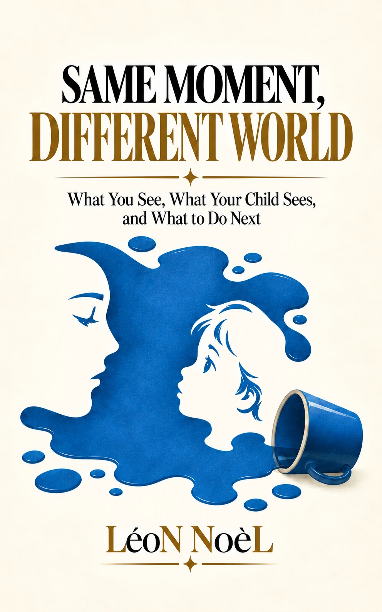

For parents & caregivers
Same Moment, Different World
What You See, What Your Child Sees, and What to Do Next

A shift in perspective
The same moment can look completely different from the other side.
Built around the contrast in its title—what you see, what your child sees, and what to do next—this book invites parents and caregivers to examine familiar moments from both perspectives before choosing a response.
It is a practical companion for noticing the gap between adult interpretation and a child’s lived experience, with the focus kept on what can be done next.
Why this story can help
A practical pause between adult interpretation and a child’s lived experience.
The book is organized around a recurring question: what changes when the same moment is viewed from the child’s side before the adult chooses a response? That perspective shift can make familiar conflicts easier to examine without pretending there is one perfect script.
Good for
- Parent–child perspective gaps
- Reframing familiar conflicts
- Choosing a next response deliberately
Looking for a screen-free follow-up? Browse the free printable library →
Choose your edition
Read it in the format that works for you.
All three editions are available on Amazon.
Explore more